Метод: выкапывание будущего
Среди художников своего поколения Даниэль Аршам — редкий случай, когда имя становится не просто подписью под работой, а методом. Его партнёры — Dior, Porsche, Adidas, Tiffany & Co., Rimowa, Pokémon, Hublot, Casetify, Samsung — на первый взгляд не имеют между собой ничего общего. Но если вглядеться, у всех этих проектов есть один и тот же «двигатель»: Аршам никогда не «украшает» продукт бренда. Он переписывает его биографию, загоняя в будущее.
Аршам называет свой подход «вымышленной археологией» (fictional archaeology) — практику, при которой объекты современности создаются так, будто их раскопали в далёком будущем: кристаллизованными, эродированными, окаменевшими. Он сформулировал это почти как манифест: «По мере развития истории все объекты устаревают и так или иначе становятся руинами или реликвиями — заброшенными или погребёнными. Через тысячу лет всё, чем мы владеем, неизбежно станет одной из этих вещей».
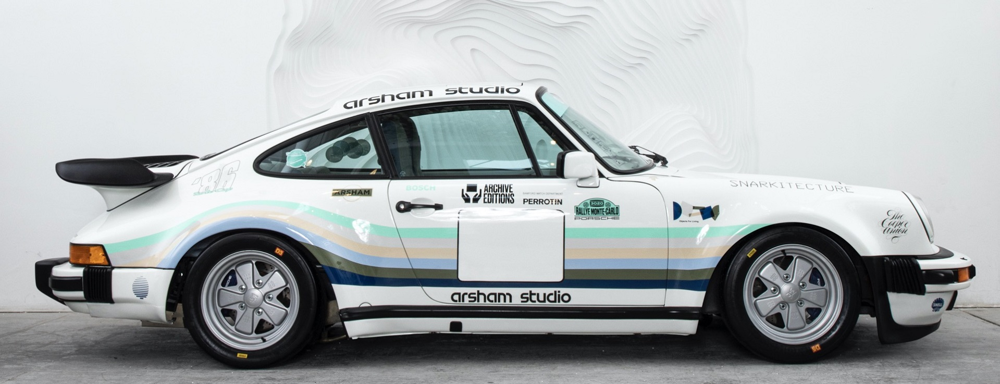
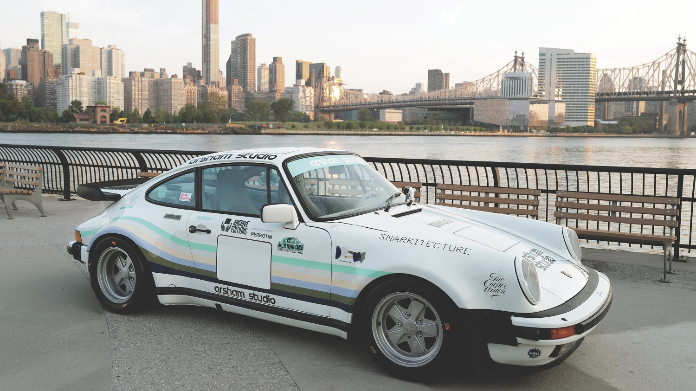
Как он выбирает партнёров: не клиент, а соавтор вселенной
В коллаборациях этот метод применяется буквально. Совместная работа с Porsche породила «эродированные» 911 из голубого кальцита и вулканического пепла, а кроссовок Adidas Futurecraft 4D был задуман как изъятый из земли артефакт будущего. Продукт бренда перестаёт быть товаром — он становится свидетельством цивилизации, которая уже исчезла. Это инверсия привычной логики мерчандайзинга: бренд не продаёт объект, бренд продаёт собственную «посмертную» славу.
Аршам объясняет свой подбор коллабораций через «родство в рабочем мире», а не через коммерческий расчёт. В интервью The Talks он говорит: иногда с коллабораторами возникает ощущение, что вы строите «нечто большее, чем то, что могли бы найти в одиночку».
«По мере развития истории все объекты устаревают и так или иначе становятся руинами или реликвиями. Через тысячу лет всё, чем мы владеем, неизбежно станет одной из этих вещей»
Даниэль Аршам
Художник, основатель студии Snarkitecture
Эстетика: эрозия, кристаллы и скульптурный минимализм
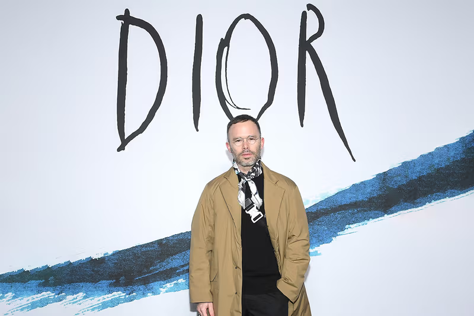
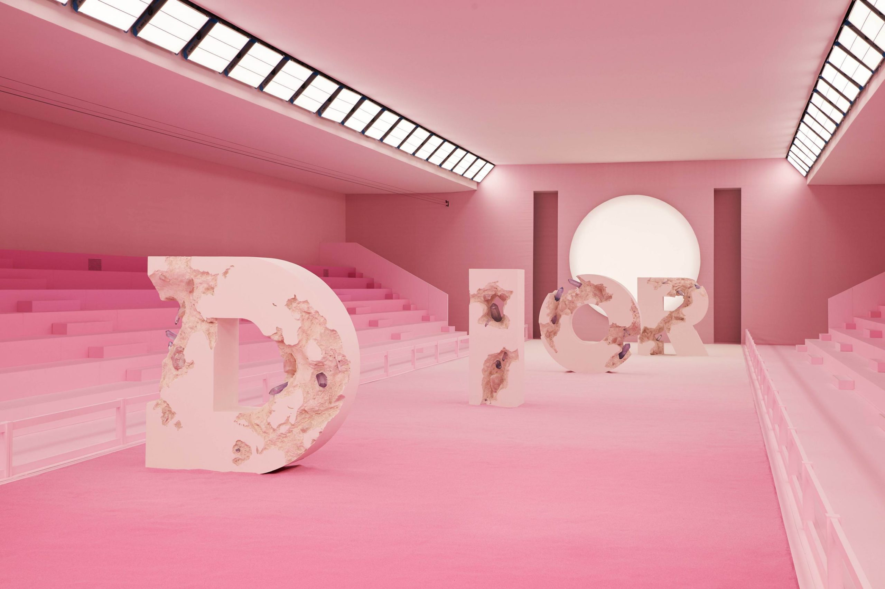
Ключевая фраза для понимания его логики — это то, как он описывает работу с Adidas и Dior: ему интересно «принести искусство туда, где люди не обязательно ожидают его увидеть». То есть коллаборация для Аршама — это не способ продать больше, а способ расширить аудиторию искусства. Проект с Pokémon он описывает именно так: это позволило ему «войти в их вселенную, стать частью этой истории и достучаться до тех, кто знаком с его миром не обязательно».
Методологическую основу этой модели Аршам почерпнул у хореографа Мерса Каннингема, с которым начинал карьеру: совместная работа, в которой каждый делает лучшее из того, что умеет, — вплоть до того, что участники проекта не знают точно, что делают другие. «Я не пошёл настолько далеко, как Каннингем, но я определённо позволял Фарреллу делать всё, что он хотел». Это и есть его модель работы с брендом: бренд получает внутри себя автономного автора, а не подрядчика по ТЗ.
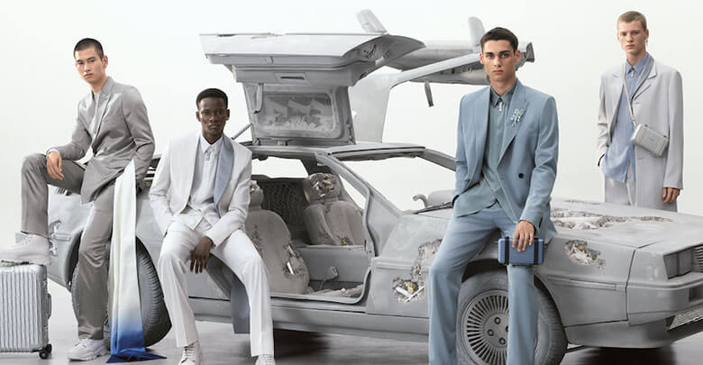
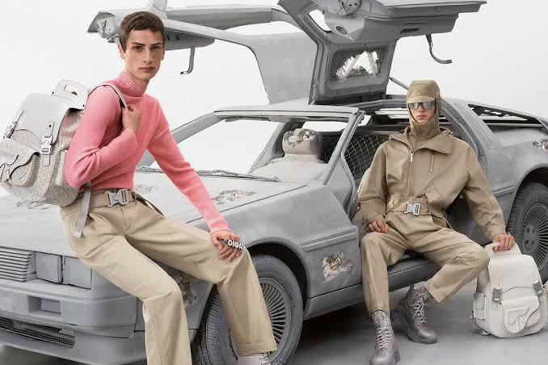
Визуальный язык Аршама узнаваем с первого взгляда и при этом хорошо ложится на продуктовый дизайн. Его словарь: объекты, «проеденные» кристаллами; поверхности, словно подвергшиеся химическому выветриванию; археологическая патина — кальцит, селенит, гидрокамень, вулканический пепел; и фирменная палитра, ограниченная дальтонизмом художника: он видит примерно 20% цветов, поэтому его работы почти монохромны — белый, серый, пастель, изредка единый акцентный цвет, как знаменитый «Arsham Green».
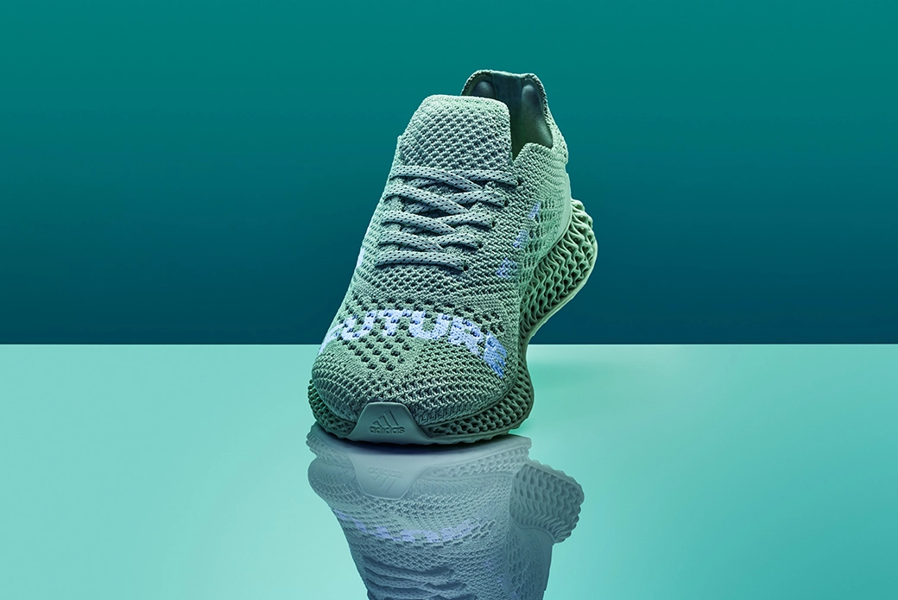
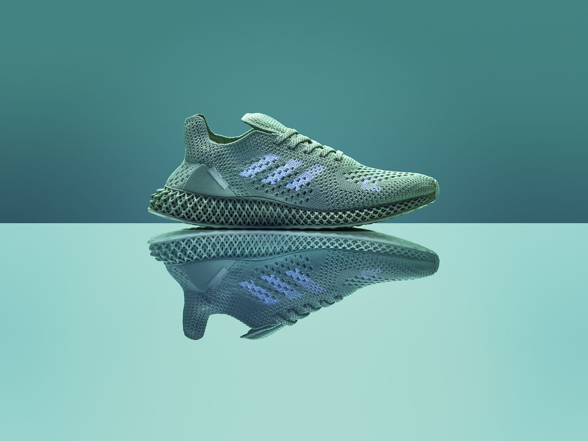
«По сути, мы все — ископаемые и артефакты в ожидании»
Даниэль Аршам
Художник
В каких медиумах это работает
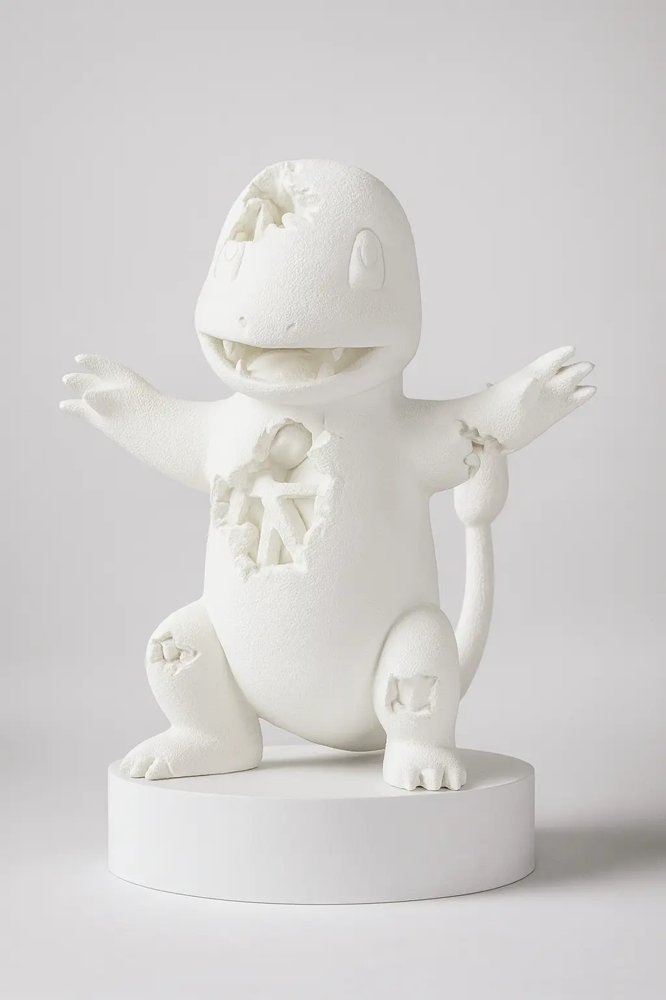
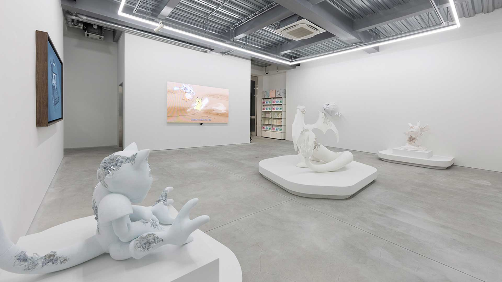
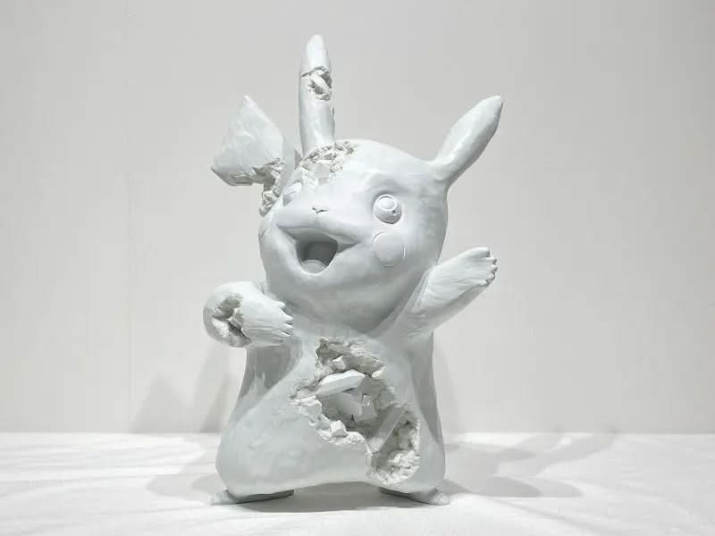
Важно, что эрозия у Аршама — не декоративная «поношенность» в духе винтажного стиля. Это временна́я операция: объект одновременно разрушается и сохраняется. Аршам говорит, что в его работе на первый план выходит идея непостоянства — всё существующее рано или поздно разрушается и распадается, «по сути, мы все — ископаемые и артефакты в ожидании».
Ещё один элемент его эстетики — кураторская «лабораторность». В студии Аршам и его ассистенты носят белые халаты с вышитыми вымышленными должностями вроде «начальник археологической бригады». Его объяснение показательно: «Одежда заставляет чувствовать себя иначе… В студии я могу быть кем угодно, и прямо сейчас я — это». Бренды покупают не просто стиль, а целую мифологию производства.
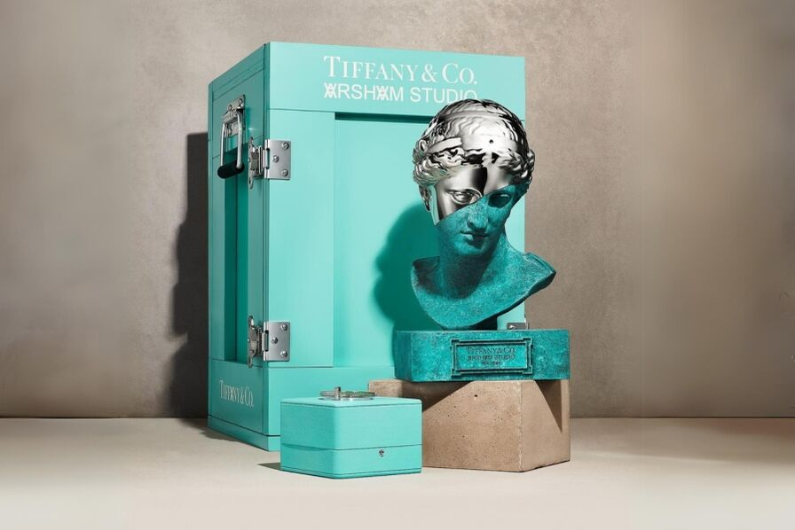
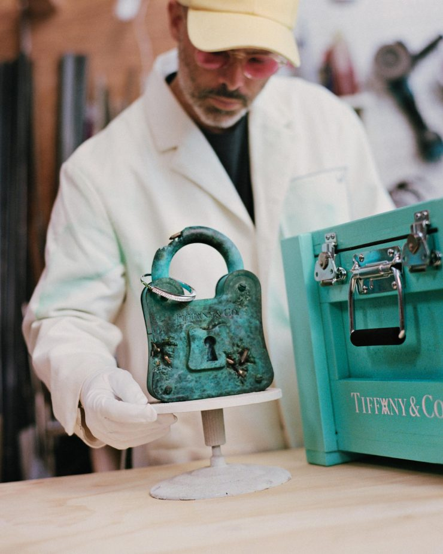
Автомобили и продукт-дизайн. С Porsche проект 930A стал образцовым кейсом: художник не просто оформил машину, а собрал её как «будущую гоночную команду», смешав дизайн гоночных Porsche 1980-х с собственной биографией — «в каком-то смысле я смешивал своё прошлое с наследием гоночных ливрей». Каждая деталь — от колёс, отсылающих к магниевым дискам RSR, до ручной росписи логотипов — имеет прослеживаемую родословную. Сам Аршам называл проект одержимостью: «The ’30A’ project developed into an obsession of mine over the last two years».
Мода и ритейл. В коллекции Dior Men SS20 приглашение пришло от Кима Джонса, и Аршам создал сценографию показа — монолитные скульптуры, «рассыпающиеся» буквы D.I.O.R. — позже выпущенные ограниченным тиражом в миниатюре. С Adidas случился знаковый прецедент: это была первая коллаборация бренда не со спортсменом или фигурой моды, а с художником — Аршам получил доступ к архивам и собрал свою пару на основе старых моделей, а вместе с ней снял фильм Hourglass об урагане «Эндрю», навсегда изменившем его восприятие мира.
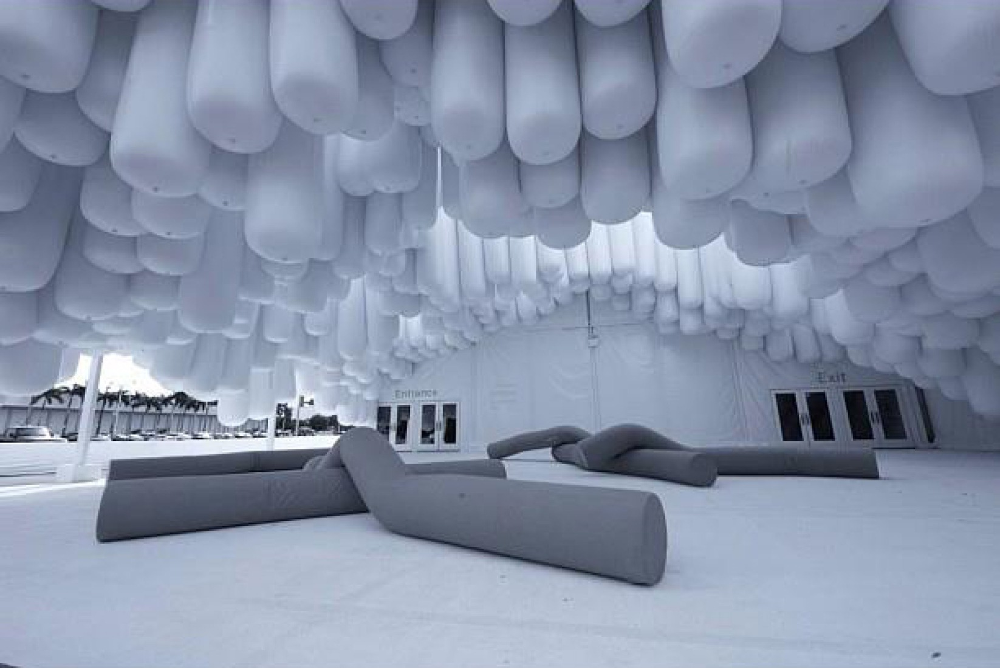
Поп-культурные вселенные. С Pikachu, Stormtrooper’ом и DeLorean из «Назад в будущее» Аршам работает как с «национальными символами» — кристаллизуя их в аметисте и бронзе. Здесь его эстетика работает как машина времени в обе стороны: ностальгический образ детства превращается в музейный экспонат.
Пространство и архитектура. Совместно со студией Snarkitecture он оформлял бутики Louis Vuitton, Calvin Klein, COS, KITH — превращая ритейл в инсталляцию. Бренды-заказчики, по сути, получали не дизайн магазина, а арт-объект, внутри которого можно покупать.
Мелкие предметы и технологии. Чехлы Casetify, часы Hublot (солнечные часы изо льда диаметром 20 метров, высеченные в снегу Церматта — объект, который нельзя купить), смартфон, а в 2026 году — рамка для телевизора Samsung The Frame Pro с каменной текстурой. В каждом случае принцип один: даже в самом массовом предмете Аршам сохраняет статус «раскопки».
Почему это работает: капитализация на времени
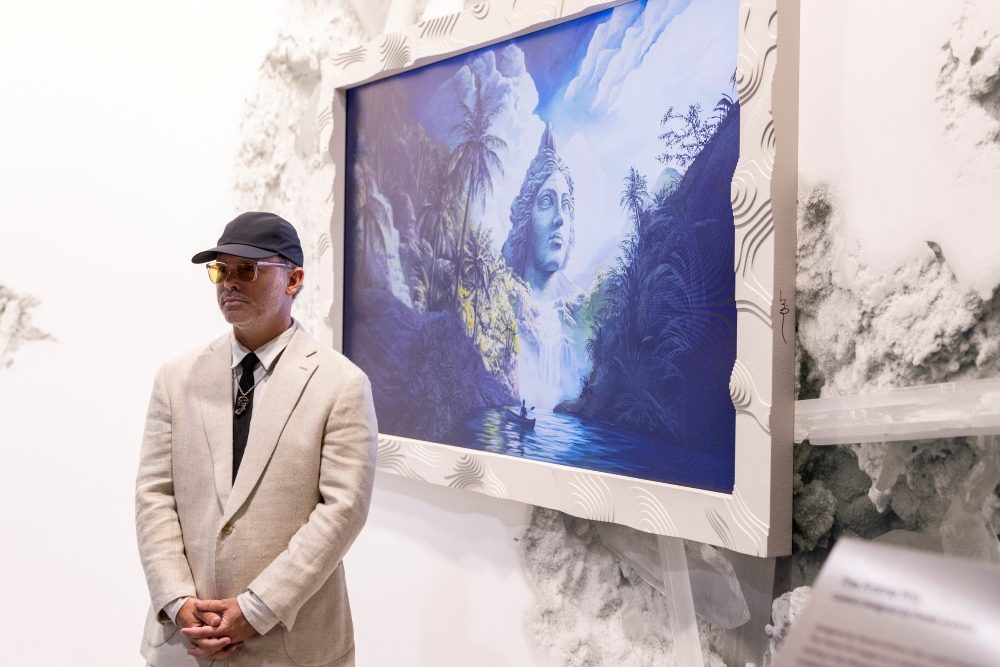
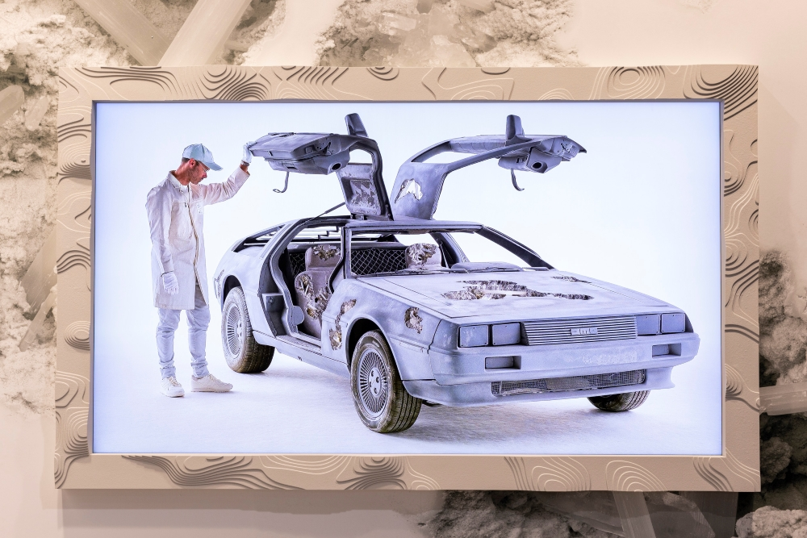
Коллаборации Аршама устойчивы, потому что они строятся не на тренде, а на концепции. Бренд приобретает у художника готовую философию — время как материал, потребление как археология — и легитимацию через арт-контекст. Аршам же получает то, что галерея дать не может: масштаб, производственные мощности и доступ к миллионам людей, которые никогда не придут на выставку.
Всё это подкреплено общей установкой, которую он разделял с Вирджилом Абло: искусство и коммерция не противоположны — «нет причин, по которым белая футболка не может быть преображена искусством так же, как холст».
Вывод
В конечном счёте Даниэль Аршам коллаборирует с брендами так, как археолог работает с землёй: он не создаёт ничего нового — он аккуратно извлекает на свет то, что по его логике неизбежно: реликвии нашей собственной эпохи. Бренд, соглашающийся на такую коллаборацию, по сути заказывает себе монумент при жизни — с трещинами, кристаллами и датировкой «найдено в 3024 году». И зритель, рассматривая эродированный Porsche или «ископаемый» кроссовок, получает то, ради чего Аршам всё это делает: «макабрический восторг от того, как наша культура может быть увидена другими спустя века» — как писал Марк Куинн в предисловии к его книге Fictional Archaeology.
Читайте также: